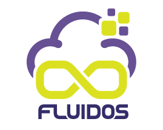

Projects
An overview of the research and technology projects I have been actively involved in.

FLUIDOS
FLUIDOS (Flexible, scaLable, secUre, and decentralIseD Operating System) is an ambitious Horizon Europe project aimed at creating a unified, edge-to-cloud computing continuum. By leveraging decentralized architectures and advanced orchestration, FLUIDOS seeks to allow resources to be seamlessly shared, distributed, and processed close to where data is generated, optimizing performance and energy consumption.
In this project, my primary involvement was leading Work Package 2 (WP2): Reference Architecture. In this role, I was responsible for designing and formalizing the core architectural blueprint that governs how different nodes in the computing continuum interact, ensuring scalability, security, and interoperability across diverse infrastructure providers.